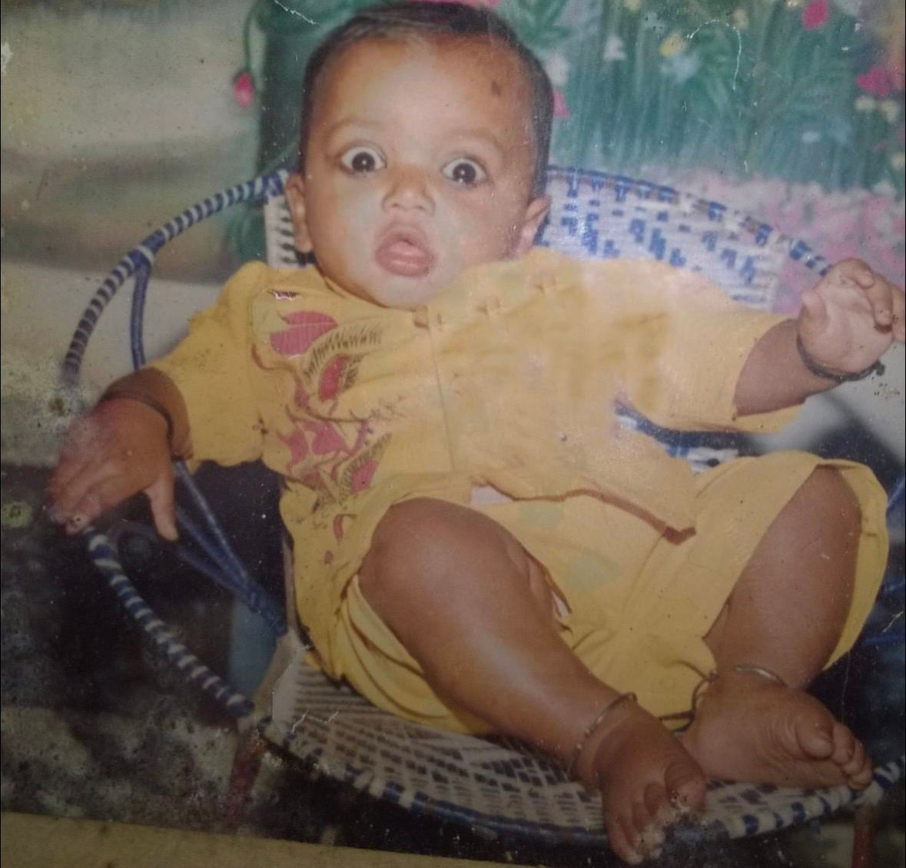
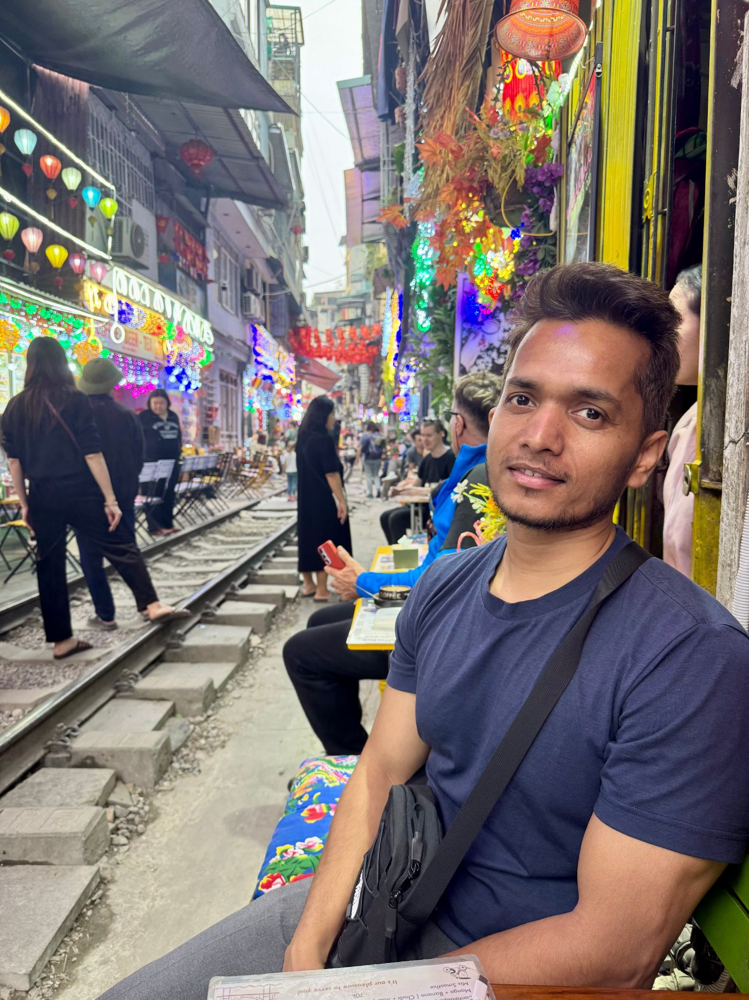
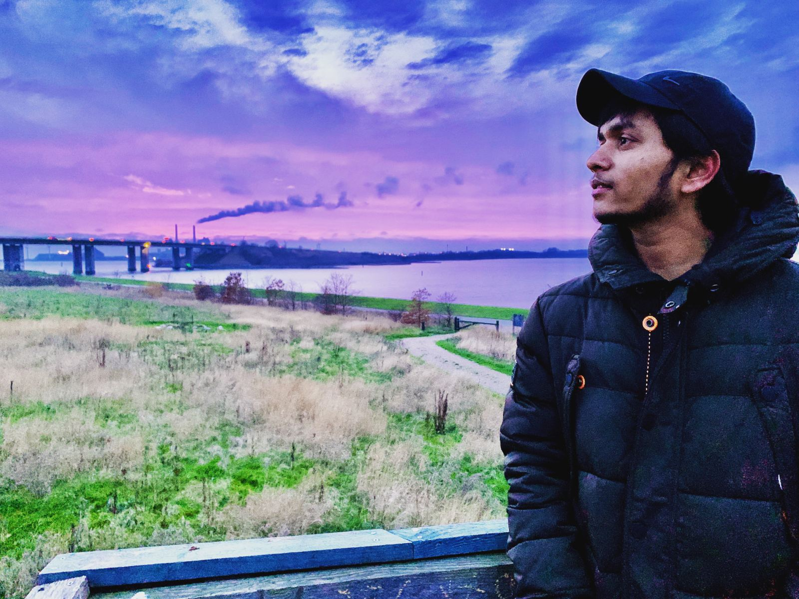

Somewhere in India, 1992. — In a year when the world was still dialling up, a small human arrived with an unusual fascination for how things work. First words came late; first questions never stopped.
Witnesses describe the early months as deceptively calm. "He just sat there in that chair," one relative recalled, "watching everything. We thought it was cute. We did not know he was taking notes."
The years that followed produced a documented trail of dismantled toys, rescued screws and suspiciously quiet afternoons. Every radio in the house has reportedly been opened at least twice. Some of them still work.
That curiosity, sources confirm, would eventually be pointed at computers — with consequences this paper documents in the pages that follow. Turn the page for the developing story.
The Boy in the Basket Chair
Every account of the early years agrees on one detail: the questions. Why does the fan turn. Where does the light go when it is off. What is inside the radio, and — more urgently — can it be opened.
The household adapted the way households do. Screwdrivers migrated to higher shelves. Warranty cards were quietly discarded, having long lost their meaning. An unspoken rule emerged that anything left unattended for more than a week was legally salvage.
It would be years before anyone in the house said the word engineer out loud. But the evidence, in retrospect, was overwhelming — and it was scattered in small screws across every windowsill of the house.
✏ This page is written from placeholder memories. Its owner has promised to replace them with true ones.
A Decade of Questions
The nineties, in this house, were an era of practical research. Ceiling fans were studied from below with scientific patience. The sewing machine was observed for hours. The television — too sacred to dismantle — was instead interrogated from every angle, its cabinet tapped like a suspect wall.
School added its own material: geometry boxes, wax crayons, the immense engineering of a fountain pen. Teachers filed the standard reports. Bright. Distracted. Asks too many questions. Only one of those three would ever be corrected.
What the decade actually taught was a habit that never left: the quiet conviction that everything — fans, radios, rules, systems — is understandable if you are willing to look inside it.
✏ Placeholder anecdotes. The fountain pen, however, feels true everywhere.
A Computer Enters the House
The machine arrived the way important things do — in a cardboard box, with a manual nobody read and a cable nobody could identify. It was installed in the most public room of the house, which was meant to limit its use and instead created an audience.
Games were played first, as is proper. Then the games were questioned. Why is it slow. Where do the files live. What happens if this folder — the one with the important-looking name — is renamed. (Answer: the machine sulks for a weekend, and a boy learns his first lesson about backups.)
Within a year the family computer had a routine maintenance schedule, an unofficial administrator, and a strong opinion living inside it about how things ought to be organised. The administrator was twelve.
✏ Adjust the dates and the disasters to match your own first machine.
The Machine Obeys
It is difficult to explain, to anyone who has not felt it, the precise voltage of the first time a program runs. Ten lines, typed with two fingers. A pause. And then the machine — this vast, humming, inscrutable appliance — does exactly what it was told.
The first program printed a greeting, as first programs do. The second printed it one hundred times, because power corrupts. The third had a bug, and thereby taught more than the first two combined.
From that afternoon forward the pattern was set: build a small thing, break it, understand why, build it again properly. It is — the subject maintains to this day — the only reliable curriculum anyone has ever designed.
The dismantling years were over. The assembling years had begun.
✏ Swap in your first language, your first bug, your first small victory.
The
Wandering
Years
Ha Long Bay, by paddle
Somewhere along the way it became policy: understand systems by travelling through them. Rivers, cities, codebases — the method is the same. Go slowly, pay attention, and do your own steering.
Photograph · the subject, mid-questionFrom Scripts to Systems
There is a particular decade in every builder's life when the toys become tools. The scripts grow tests. The experiments grow users, which is wonderful, and the users grow expectations, which is educational.
The subject learned the trade the durable way: by shipping things and then being responsible for them. Production taught what no tutorial could — that software is mostly a long conversation between the person you were when you wrote it and the person you are at 2 a.m. when it breaks.
Along the way came the open-source habit: reading other people's code like literature, fixing what needed fixing, and leaving every campsite slightly cleaner than it was found.
✏ Insert your actual roles, stacks and war stories here.
Things I've Built
Fetching repositories from GitHub…
The Instruments
Languages
Frameworks & Tools
Practices
Beyond Code
How the Work Gets Done
- Open it up.
Nothing is magic. Read the source, trace the wire, ask the impertinent question. Understanding is a decision.
- Small, then correct, then fast.
In that order. Every disaster in the archive came from reversing it.
- Leave the campsite cleaner.
Every file touched should be slightly better for the visit — clearer name, truer comment, one less trap for the next person.
- Write it down.
The best documentation is a kindness addressed to a stranger — who is usually you, in six months.
- Stay a beginner.
The basket chair is long gone. The wide-eyed stare at new machinery, ideally, never goes.

Off
the
Clock
Hanoi, train street
A café where the timetable is the entertainment and the espresso comes with a safety briefing. The subject reports it is the best place he knows to think about throughput.
Photograph · between trains
The quiet hours
Not everything worth doing compiles. Some evenings are for railings, rivers, and letting the day's problems arrange themselves into tomorrow's obvious answers.
Photograph · far from the keyboardThe Subject, Today
The inventory, three decades on: one engineer, field-tested. A public shelf of repositories, each one a small argument about how things ought to work. A toolbox that keeps changing and a method that refuses to. More grey in the hair than in the outlook.
The work these days is the same as it always was, only larger — open the system, understand it honestly, leave it better. The radios of 1996 have become distributed systems, which break with more dignity but for the same reasons.
Asked for a forward-looking statement, the subject offered only this: the best chapter is the one currently being written — and turned back to the keyboard.
✏ Update this dispatch as the story develops.
"The best stories are the ones we build together. If mine resonated with you — let's write the next chapter."